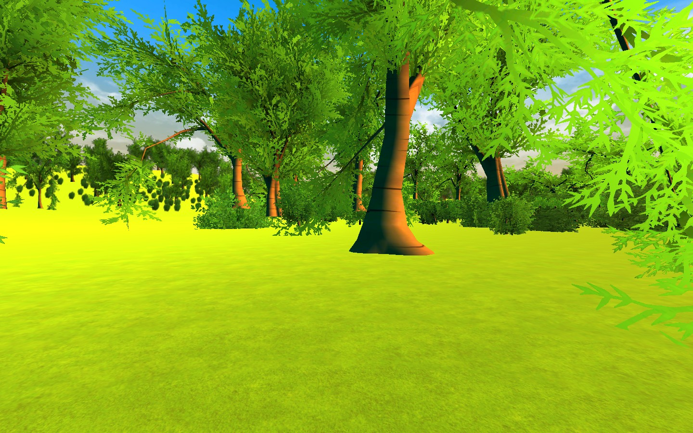
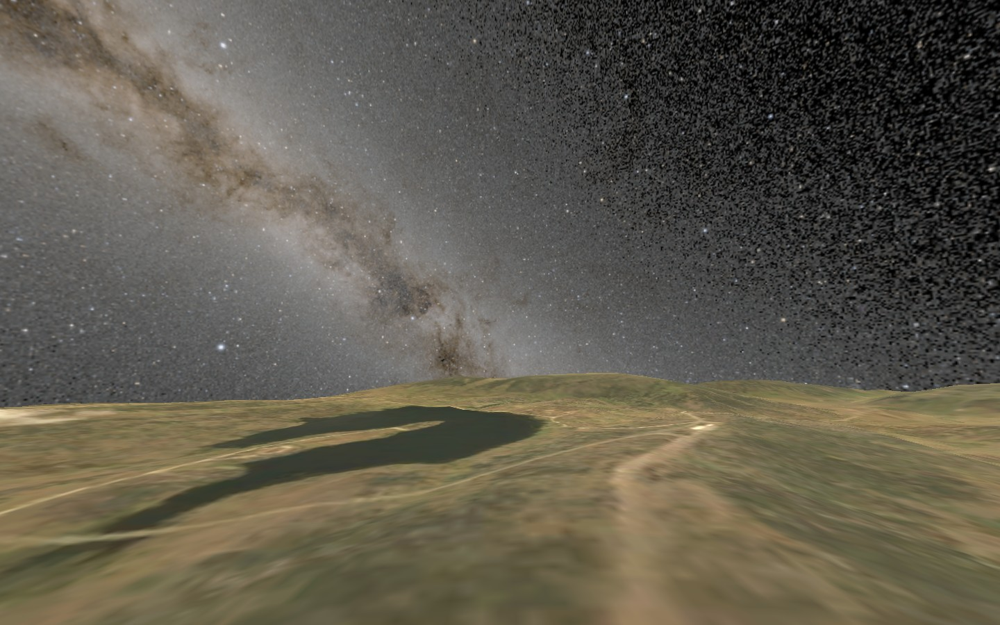
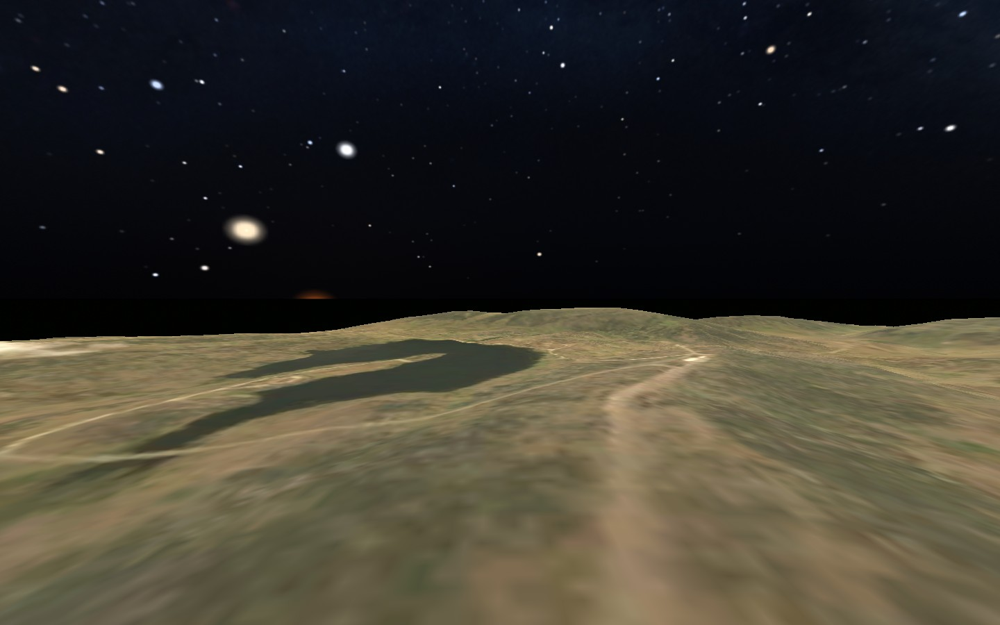
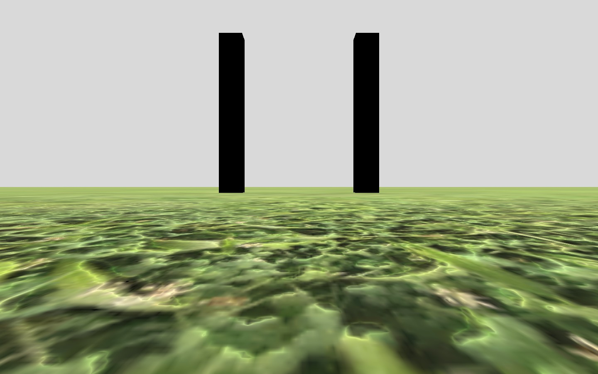
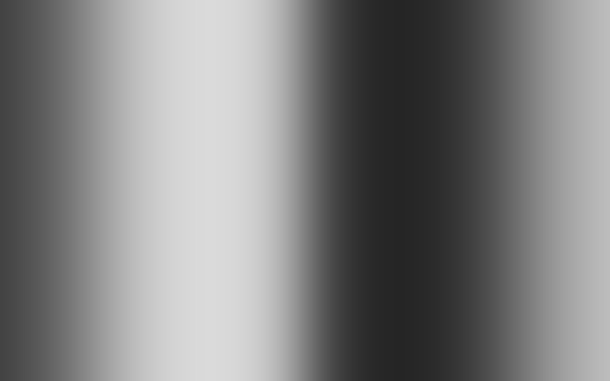
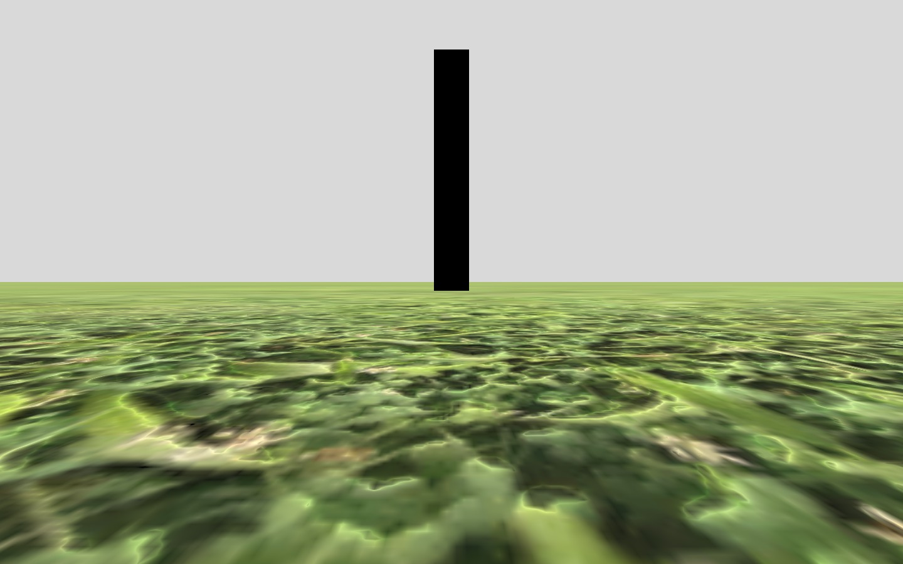
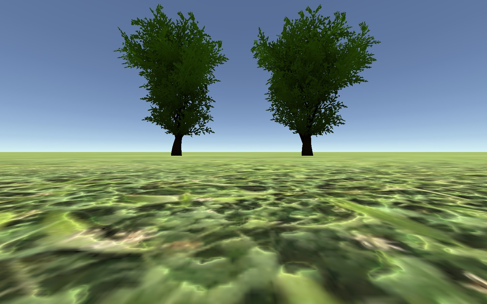
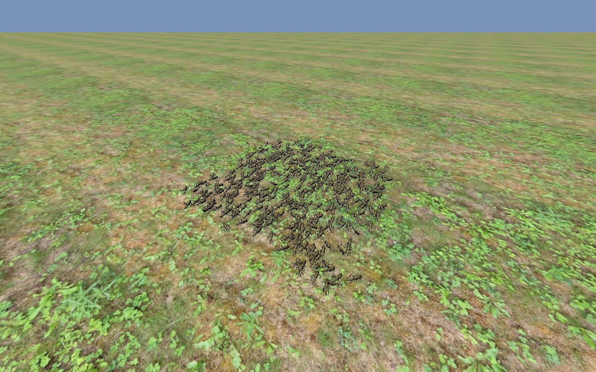
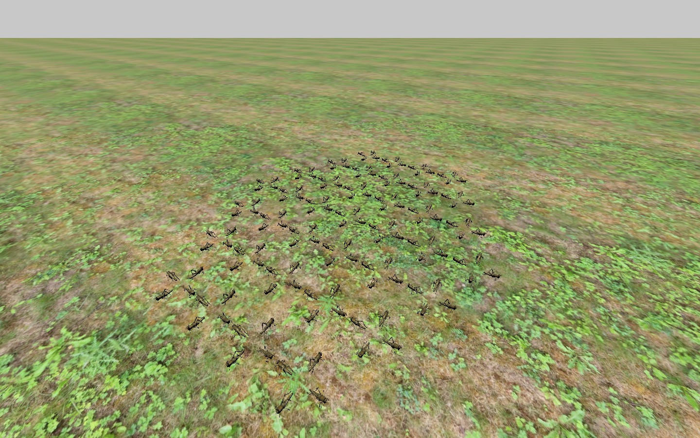

Native capability gallery
These previews come from genuine Unity rendering of the named source scenes and configurations. Captions distinguish software fixtures, authored environments and the compact standalone scene set. They are not photographs of an animal session or invented renderings.


Choice_Forrest + Landscape prefab
Actual Choice_Forrest rendering with the bundled Assets/Prefabs/Landscape.prefab instantiated by the capture fixture to supply ground and forest. This is a source customization, not the default scene or a compact-player preset.


Terrain beneath the Milky Way
Authored terrain and an automatically generated astronomical sky. The sky manifest identifies its observer location and represented time.


Terrain and a panoramic background
Homing-style visual context combines authored terrain with an explicit panorama. A panorama background does not define navigable geometry.


Choice bars
Configured bar stimuli in the existing Choice controller family; positions and appearance belong to the experiment JSON.


Optomotor drum
The rotating grating/drum path owns stimulus motion and records its stimulus parameters.


Stripe fixation recipe
A stripe/fixation configuration uses the existing controller and registered visual assets rather than requiring a separate scene per parameter.


Objects and landmarks
A configured set of object stimuli with explicit pose/appearance and the active tracking/reset choices.


Locust swarm
Virtual agent populations rendered around an animal-controlled rig, with independent agent motion and per-rig visibility.


Kannadi — the mirror matrix
ಕನ್ನಡಿ means mirror in Kannada. The scene replicates tracked animal poses across a hexagonal matrix with configured self/peer viewing.
Capture provenance identifies the native fixture, scene and configuration. Image/config hashes identify the actual files. The manifest retains an Editor startup SearchDatabase exception separately; the gallery failure field is null. No hardware collection is represented.
What a preview establishes
A capture establishes what that scene/configuration rendered in the documented software fixture. It does not establish physical LED scanout, tracker latency, photometric calibration or the perceptual response of an animal. The source/configuration/provenance links travel with each preview.
The forest preview is Choice_Forrest with the bundled Landscape prefab instantiated by the native capture fixture. The additional prefab is recorded in provenance; it is not a claim that the authored scene already contains that ground/forest or that this setup ships in the compact player.
Optional forest/tree environments remain available from source and require their scenes in a custom build. The compact application still contains the ten documented scenes; the gallery does not silently add a scene to an existing release.
For the generated sky's sample time, location, source map and image hash, inspect its archived manifest. For terrain geometry, use the measured rugosity conditions, not a visual estimate from a screenshot.